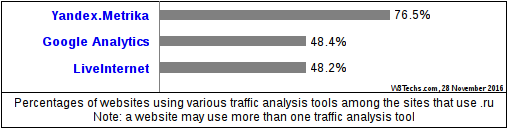
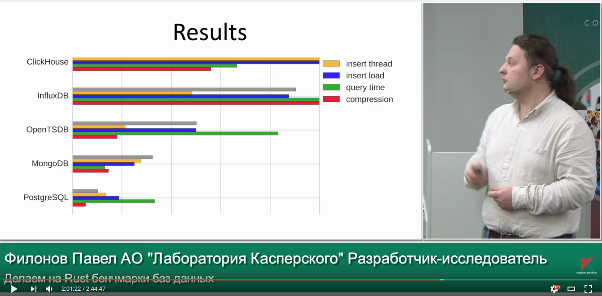

Why column-oriented?
This is how "traditional" row-oriented databases work:

Alexey, developer of ClickHouse.
I work on data processing engine of Yandex.Metrica since 2008.
Yandex.Metrica (https://metrica.yandex.com/) is a service for web analytics.
Largest in Russia, second largest in the world (just after Google Analytics).

We are processing about ~25 billions of events (page views, conversions, etc).
We must generate and show reports in realtime.
Everything was working fine. User could show about 50 different reports.
But there was a problem. We want more than just 50 pre-defined reports. We need to make every report infinitely customizable. The user must be able to slice and dice, and drill down every report from summary up to show single visitors.
We had quickly made a prototype of so-called "report builder".
This was 2010 year. It was just simple specialized column-oriented data structure.
It worked fine and we got understanding, what the right direction to go.
We need good column-oriented DBMS.
This is how "traditional" row-oriented databases work:
And this is how column-oriented databases work:

In 2011 there was nothing suitable in the marked. In fact there is nothing comparable even now.
Then we developed ClickHouse.
See nice article «Evolution of data structures in Yandex.Metrica»
https://habrahabr.ru/company/yandex/blog/273305/
The article is in russian. Use machine translation. Also there is third-party translation to chinese, baidu for it.

* If you want to try ClickHouse, one server or VM is enough.
Surprisingly, ClickHouse appears to be rather convenient and handy for usage.
We have descriptive documentation from the beginning.
In about two years, many other departments in Yandex had started to use ClickHouse in production.
Yandex.Mail, Comparison shopping, Ads, Webmaster tools, Infrastructure monitoring, Business analytics, etc...
There was even cases, when single analysts install ClickHouse on their VMs and started to use it without any questions.
Then we decided — ClickHouse is just too good to be used solely by Yandex.
To just have more fun, we need to make more companies and people around the world using ClickHouse, to let them be happy. We decided to be open-source.
Apache 2.0 licence — very unrestrictive.
The goal — maximum widespread of ClickHouse.
We want for product by Yandex to be used everywhere.
See “Yandex open-sourced ClickHouse”
https://habrahabr.ru/company/yandex/blog/303282/
Article is also in russian, but you may just check corresponding Hacker's news thread
For well structured, clean, immutable events.
Click stream. Web analytics. Adv. networks. RTB. E-commerce.
Analytics for online games. Sensor and monitoring data. Telecom data.
Stock exchanges. Financial transactions.
OLTP
ClickHouse doesn't have UPDATE statement and full-featured transactions.
Key-Value
If you want high load of small single-row queries, please use another system.
Blob-store, document oriented
ClickHouse is intended for vast amount of fine-grained data.
Over-normalized data
Better to make up single wide fact table with pre-joined dimensions.
— we just cannot make it slower.
Yandex.Metrica must work.
Algorithmic optimizations.
MergeTree, locality of data on disk
— fast range queries.
Example: uniqCombined function is a combination of three different data structures, used for different ranges of cardinalities.
Low-level optimizations.
Example: vectorized query execution.
Specialization and attention to detail.
Example: we have 17 different algorithms for GROUP BY. Best one is selected for your query.
Itai Shirav:
«I haven't made a rigorous comparison, but I did convert a time-series table with 9 million rows from Postgres to ClickHouse.
Under ClickHouse queries run about 100 times faster, and the table takes 20 times less disk space. Which is pretty amazing if you ask me».
Bao Dang:
«Obviously, ClickHouse outperformed PostgreSQL at any metric».
Timur Shenkao:
«ClickHouse is extremely fast at simple SELECTs without joins, much faster than Vertica».
Ömer Osman Koçak:
«When we evaluated ClickHouse the results were great compared to Prestodb. Even though the columnar storage optimizations for ORC and Clickhouse is quite similar, Clickhouse uses CPU and Memory resources more efficiently (Presto also uses vectorized execution but cannot take advantage of hardware level optimizations such as SIMD instruction sets because it's written in Java so that's fair) so we also wanted to add support for Clickhouse for our open-source analytics platform Rakam (https://github.com/rakam-io/rakam)»
«Я потестировал Clickhouse, по скорости просто отлично = намного быстрее spark на одной машине (у меня получилось порядка 3x, но еще буду сравнивать). Кроме того compression получается лучше».
«ClickHouse показывает сравнимую скорость на таком запросе за 30 дней и в 8 раз быстрее (!) на таком запросе. В планах есть протестировать и другие запросы, еще не добрались.
Скорость выполнения запросов стабильна. В Google BigQuery в период пиковых нагрузок, например в 4:00 p.m. PDT или в начале месяца, время выполнения запросов может заметно увеличиваться».
«В этом году мы развернули сборку на основе Druid — Imply Analytics Platform, а также Tranquility, и уже приготовились запускать в продакшн… Но после выхода ClickHouse сразу отказались от Druid, хотя потратили два месяца на его изучение и внедрение».
«结论：clickhouse速度更快！»
«In conclusion, ClickHouse is faster!»
http://verynull.com/2016/08/22/infinidb与clickhouse对比/



In fact, things are not so simple, there are many details.
HTTP REST
clickhouse-client
JDBC
Python, PHP, Go, Perl, Ruby, Node.JS, R
Web UI: https://github.com/smi2/clickhouse-frontend
Redash, Zeppelin, Grafana, PowerBI - somewhat works
Web site: https://clickhouse.yandex/
Google groups: https://groups.google.com/forum/#!forum/clickhouse
Maillist: clickhouse-feedback@yandex-team.com
Telegram chat: https://telegram.me/clickhouse_en and https://telegram.me/clickhouse_ru (now 308 members)
GitHub: https://github.com/yandex/ClickHouse/
+ meetups. Moscow, Saint-Petersburg... International meetups (Berlin, Paris) will be announced this year.
How to start using ClickHouse and win jackpot:
More than 100 companies are already using ClickHouse in production. What about you? Start to use ClickHouse today!
Thank you. Questions.